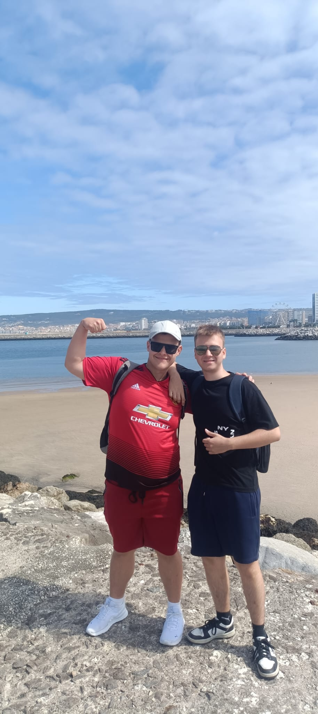

Nasze Portugalia Wycieczki
Odkrywanie piękna Portugalii krok po kroku
Lisboa - Stolica Portugalii
Magiczne miasto na siedmiu wzgórzach, pełne historii, kultury i niezwykłej architektury.
Marzec 2024

Zdjęcie z Lizboną

Monument odkryć geograficznych

Monument odkryć geograficznych vol.2

Fontanna
Murtinheira Beach - Raj nad oceanem
Dzika plaża z dramatycznymi klifami i najczystszą wodą Atlantyku.
Kwiecień 2024

Mini latarnia

Dawid i "Pączuś" z United

Grupa nad klifem

Dzika przyroda
Coimbra - Miasto studentów
Historyczne miasto z najstarszym uniwersytetem w Portugalii i przepiękną biblioteką.
Maj 2024
Uniwersytet Coimbry
Festiwal średniowieczny
Zdjęcie z zespołem bardów
Pomnik św. Izabeli
Porto - Perła północy
Miasto porto, kolorowych domów i mostów nad rzeką Douro.
Czerwiec 2024

Zdjęcie z Porto
Ratusz Porto

Kościół Porto

Księgarnia Lello
Fatima - Miasto cudów
Najważniejsze miejsce pielgrzymkowe w Portugalii, pełne spokoju i duchowości.
Wrzesień 2024
Koło kościoła
Plac Sanktuarium
Zdjęcie pod lokalnym drzewem
Przy wejściu do kościoła
Aveiro - Portugalska Wenecja
Urocze miasto kanałów z kolorowymi łodziami moliceiro i przepięknymi azulejos.
Październik 2024
Zdjęcie z Aveiro
Kościół Aveiro

White Stripe Houses
Costa Nova Beach